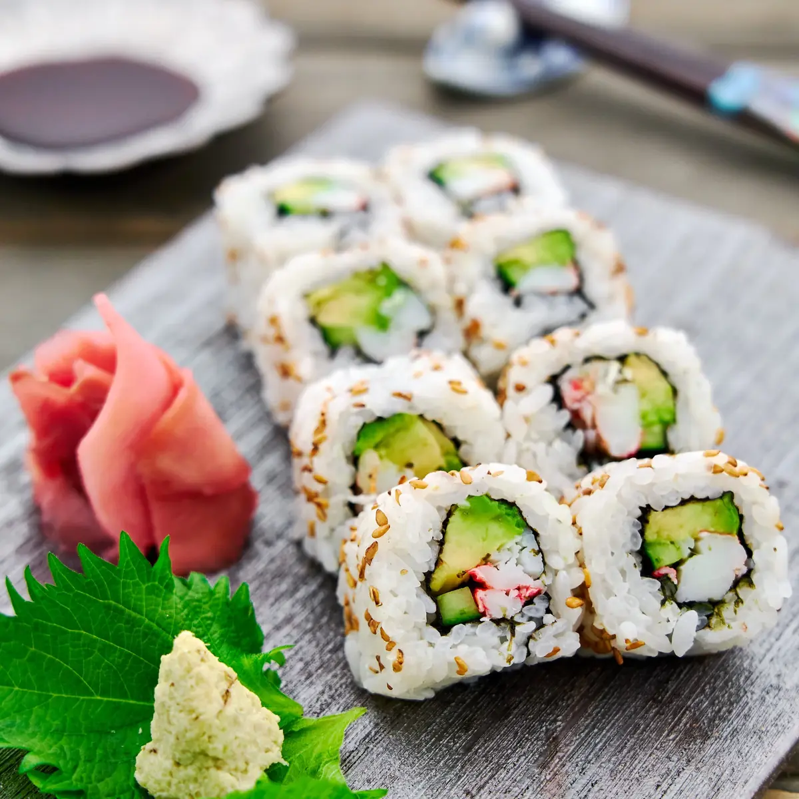

California Rolls
- Makes4
- Ingredients7
- Steps7

Ingredients
- 2 cups sushi rice, cooked
- ¼ cup seasoned rice vinegar
- 4 half sheets sushi grade nori
- 1 teaspoon sesame seed, optional
- 8 pieces imitation crab
- 1 small cucumber, cut into sticks
- 1 avocado, thinly sliced
Directions
- Season the sushi rice with the rice vinegar, fanning and stirring until room temperature.
- On a rolling mat, place one sheet of nori with the rough side facing upwards.
- Wet your hands and grab a handful of rice and place it on the nori. Spread the rice evenly throughout the nori without mashing the rice down. Season rice with a pinch of sesame seeds, if using, then flip it over so the nori is facing upwards.
- Arrange, in a horizontal row 1 inch (2.5 cm) from the bottom, the crab followed by a row of avocado and a row of cucumber.
- Grabbing both nori and the mat, roll the mat over the filling so the extra space at the bottom touches the other side, squeezing down to make a nice tight roll. Squeeze down along the way to keep the roll from holding its shape.
- Transfer the roll onto a cutting board. Rub a knife on a damp paper towel before slicing the roll into six equal portions.
- Enjoy!